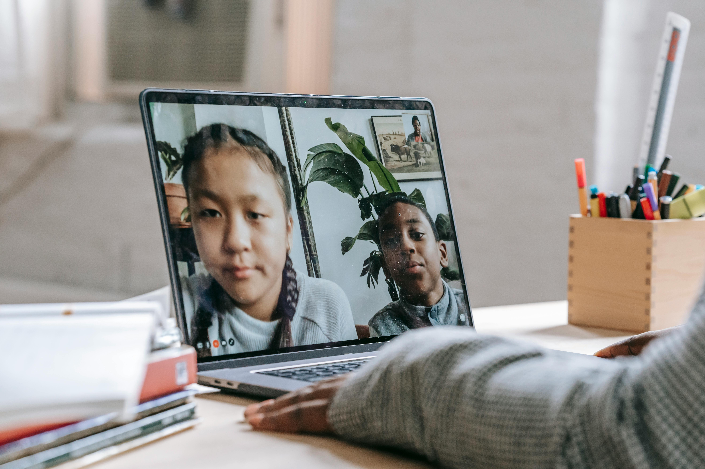

Online education has become one of the most important learning methods in the modern digital world. It allows students to learn from anywhere using the internet. Many schools, colleges, and training institutes now provide online courses, video tutorials, and digital study materials. Online learning platforms help students develop new skills and improve their knowledge. Teachers can also interact with students using virtual classrooms and discussion platforms. Because of this technology, education has become more accessible to people across the world.
Many educational websites provide courses on various subjects such as programming, business, science, and design. Students can choose courses based on their interests and career goals. These platforms offer high quality learning materials, recorded lectures, and practice exercises. Students can learn at their own pace without pressure. Online education has helped millions of people improve their knowledge and professional skills.
One of the major advantages of online education is flexibility. Students can study anytime and anywhere using laptops or smartphones. Courses often include video tutorials, assignments, quizzes, and assessments. These features help learners understand concepts better. Many platforms also provide certificates after completing courses successfully.
Online learning has improved significantly in recent years.
Earlier online courses had limited interaction but modern platforms provide live classes,
discussion forums, and interactive learning tools.
Students can communicate with teachers and classmates easily.
Because of these improvements, online education has become a reliable method of learning.
The future of education is strongly connected with technology. Many universities are introducing fully online degree programs. Students can now complete entire courses without visiting classrooms. Digital learning platforms make education more accessible while advanced technologies improve the overall learning experience. Online education will continue to grow and help people learn new skills worldwide.

